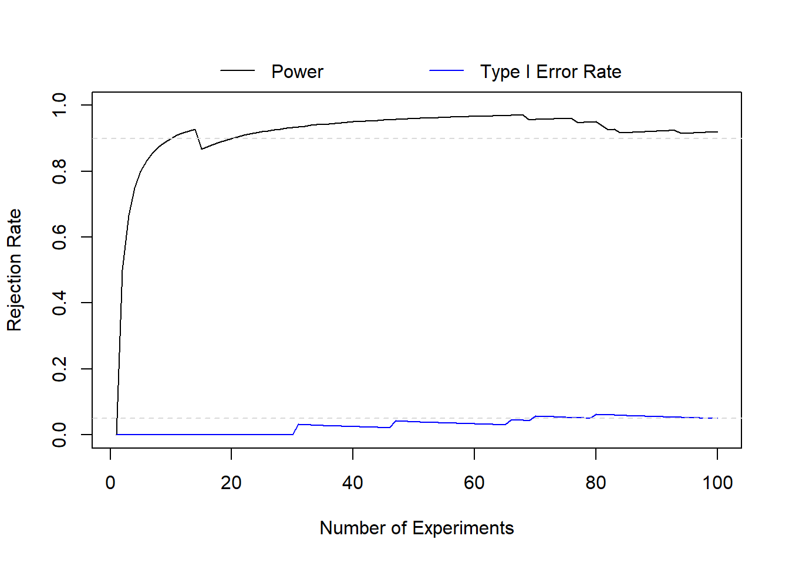
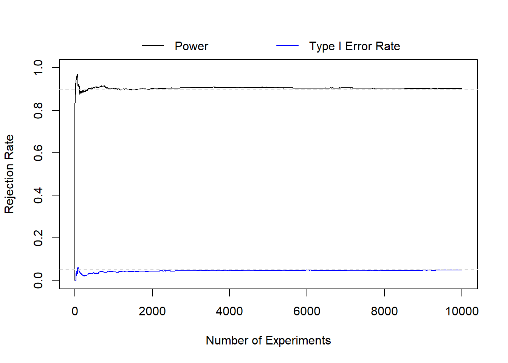

This page is part of the University of Colorado-Anschutz Medical Campus’ BIOS 6618 Recitation collection. To view other questions, you can view the BIOS 6618 Recitation collection page or use the search bar to look for keywords.
Long-Run Properties of \(\alpha\) and \(\beta\) (Power)
From our lecture we noted that “Neyman and Pearson assumed that \(\alpha\) and \(\beta\) were in terms of the long run (i.e., over infinite repeated samples).” This gets at the idea that frequentist power and type I error rates are estimates of what will occur over many, many repeated experiments (i.e., the long run), instead of what will happen in any one trial.
We do interpret our NHST (null hypothesis significance testing) framework (an amalgamation of Fisher’s p-value with Neyman and Pearson’s rejection regions) as properties that could apply to any individual study. For example, power (\(1-\beta\)) can be thought of as the probability that you reject the null hypothesis assuming a difference truly exists.
In practice, any one study results in a yes/no decision. Either we found our effect (if it exists) or we didn’t, so it doesn’t actually tell us much about the overall probability of finding the effect across repeated studies.
To evaluate the long run properties, we can explore some simulation studies! Assume we wish to have 90% power to detect a difference of 0.5 units with \(\sigma=1\) and \(\alpha=0.05\). This would require 44 participants (remember to always round your sample size up):
One-sample t test power calculation
n = 43.99552
delta = 0.5
sd = 1
sig.level = 0.05
power = 0.9
alternative = two.sided
For our simulation we’ll examine how the estimated power changes from conducting 1 to 10000 experiments for both the alternative and null hypothesis while simulating data from a normal distribution:
Code
set.seed(6618) # set seed for reproducibilityntest <-10000# number of testsn <-44# from power calculationalpha <-0.05# simulate data and save p-values from t-testalt_dat <-sapply(1:ntest, function(x) t.test(rnorm(n=n, mean=0.5, sd=1))$p.value )null_dat <-sapply(1:ntest, function(x) t.test(rnorm(n=n, mean=0, sd=1))$p.value )# let's explore the first set of p-values for each simulation:round(alt_dat[1:10],4)
We can see from the first 10 p-values, there are 1/10 alternative hypotheses that have false negatives (i.e., where p>0.05) and 0/10 null hypothesis that had a false positive (i.e., where p<0.05). Although, this isn’t a huge number of tests, so we can also visualize the trends. Let’s start with the first 100 tests to see how power and type I error rates change as we repeat the experiment more often:
Code
# calculate rejection rate (i.e., power and type I error rate) for 1st through ntest-th p-valuepower <-sapply(1:ntest, function(x) mean(alt_dat[1:x] <= alpha))t1e <-sapply(1:ntest, function(x) mean(null_dat[1:x] <= alpha))# zoom into first 100 testsplot(x=1:100, y=power[1:100], xlab='Number of Experiments', ylab='Rejection Rate', type='l', ylim=c(0,1))legend('top', xpd=T, bty='n', horiz=T, col=c('black','blue'), lty=c(1,1), legend=c('Power','Type I Error Rate'), inset=-0.125)lines(x=1:100, y=t1e[1:100], col='blue')abline(h=c(0.05,0.90), lty=2, col='gray85')

We can see in the first 100 experiments our type I error rate is a little conservative, although it converges to 0.05 around 90 experiments. For power, it starts very low (since the first experiment resulted in a false negative) and then quickly starts to approximate our target of 90% power before being overly optimistic.
With 100 experiments, we may be satisfied that things are “close enough”, but we can explore the long(er) run probability:
Code
# plot power and t1e over all ntest experimentsplot(x=1:ntest, y=power, xlab='Number of Experiments', ylab='Rejection Rate', type='l', ylim=c(0,1))legend('top', xpd=T, bty='n', horiz=T, col=c('black','blue'), lty=c(1,1), legend=c('Power','Type I Error Rate'), inset=-0.125)lines(x=1:ntest, y=t1e, col='blue')abline(h=c(0.05,0.90), lty=2, col='gray85')

Even though there is still some noise, we see both our type I error rate and power converge to \(\alpha\) and \(1-\beta\) by 10000 experiments. And if we extended this further to \(\infty\) experiments, we’d converge to \(\alpha\) and \(1-\beta\).
Source Code
---title: Long-Run Properties of $\alpha$ and $\beta$ (Power)author: name: Alex Kaizer roles: "Instructor" affiliation: University of Colorado-Anschutz Medical Campustoc: truetoc_float: truetoc-location: leftformat: html: code-fold: show code-overflow: wrap code-tools: true---```{r, echo=F, message=F, warning=F}library(kableExtra)library(dplyr)```This page is part of the University of Colorado-Anschutz Medical Campus' [BIOS 6618 Recitation](/recitation/index.qmd) collection. To view other questions, you can view the [BIOS 6618 Recitation](/recitation/index.qmd) collection page or use the search bar to look for keywords.# Long-Run Properties of $\alpha$ and $\beta$ (Power)From our lecture we noted that "Neyman and Pearson assumed that $\alpha$ and $\beta$ were in terms of *the long run* (i.e., over infinite repeated samples)." This gets at the idea that frequentist power and type I error rates are estimates of what will occur over many, many repeated experiments (i.e., the long run), instead of what will happen in any one trial.We do interpret our NHST (null hypothesis significance testing) framework (an amalgamation of Fisher's p-value with Neyman and Pearson's rejection regions) as properties that could apply to any individual study. For example, power ($1-\beta$) can be thought of as the probability that you reject the null hypothesis assuming a difference truly exists.In practice, any one study results in a yes/no decision. Either we found our effect (if it exists) or we didn't, so it doesn't actually tell us much about the overall probability of finding the effect across repeated studies.To evaluate the long run properties, we can explore some simulation studies! Assume we wish to have 90% power to detect a difference of 0.5 units with $\sigma=1$ and $\alpha=0.05$. This would require 44 participants (remember to **always** round your sample size up):```{r}power.t.test(delta=0.5, sd=1, sig.level=0.05, power=0.9, n=NULL, type='one.sample')```For our simulation we'll examine how the estimated power changes from conducting 1 to 10000 experiments for both the alternative and null hypothesis while simulating data from a normal distribution:```{r}set.seed(6618) # set seed for reproducibilityntest <-10000# number of testsn <-44# from power calculationalpha <-0.05# simulate data and save p-values from t-testalt_dat <-sapply(1:ntest, function(x) t.test(rnorm(n=n, mean=0.5, sd=1))$p.value )null_dat <-sapply(1:ntest, function(x) t.test(rnorm(n=n, mean=0, sd=1))$p.value )# let's explore the first set of p-values for each simulation:round(alt_dat[1:10],4)round(null_dat[1:10],4)```We can see from the first 10 p-values, there are 1/10 alternative hypotheses that have false negatives (i.e., where p>0.05) and 0/10 null hypothesis that had a false positive (i.e., where p<0.05). Although, this isn't a huge number of tests, so we can also visualize the trends. Let's start with the first 100 tests to see how power and type I error rates change as we repeat the experiment more often:```{r}# calculate rejection rate (i.e., power and type I error rate) for 1st through ntest-th p-valuepower <-sapply(1:ntest, function(x) mean(alt_dat[1:x] <= alpha))t1e <-sapply(1:ntest, function(x) mean(null_dat[1:x] <= alpha))# zoom into first 100 testsplot(x=1:100, y=power[1:100], xlab='Number of Experiments', ylab='Rejection Rate', type='l', ylim=c(0,1))legend('top', xpd=T, bty='n', horiz=T, col=c('black','blue'), lty=c(1,1), legend=c('Power','Type I Error Rate'), inset=-0.125)lines(x=1:100, y=t1e[1:100], col='blue')abline(h=c(0.05,0.90), lty=2, col='gray85')```We can see in the first 100 experiments our type I error rate is a little conservative, although it converges to 0.05 around 90 experiments. For power, it starts very low (since the first experiment resulted in a false negative) and then quickly starts to approximate our target of 90% power before being overly optimistic.With 100 experiments, we may be satisfied that things are "close enough", but we can explore the long(er) run probability:```{r}# plot power and t1e over all ntest experimentsplot(x=1:ntest, y=power, xlab='Number of Experiments', ylab='Rejection Rate', type='l', ylim=c(0,1))legend('top', xpd=T, bty='n', horiz=T, col=c('black','blue'), lty=c(1,1), legend=c('Power','Type I Error Rate'), inset=-0.125)lines(x=1:ntest, y=t1e, col='blue')abline(h=c(0.05,0.90), lty=2, col='gray85')```Even though there is still some noise, we see both our type I error rate and power converge to $\alpha$ and $1-\beta$ by 10000 experiments. And if we extended this further to $\infty$ experiments, we'd converge to $\alpha$ and $1-\beta$.